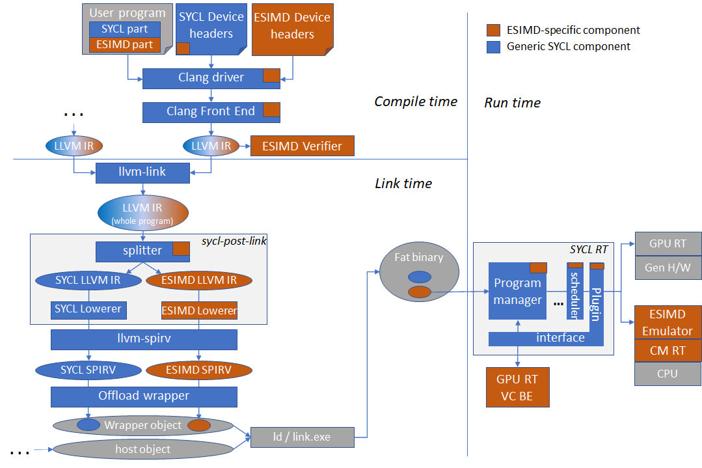

Explicit SIMD design notes¶
This documents is a collection of notes describing design and/or implementation of various parts of the ESIMD programming model support within the DPC++.
Overview of ESIMD support in DPC++ components¶
ESIMD support is spread across a number of components in the oneAPI software stack, spanning compile time, link time and runtime. The picture below shows simplified view of the DPC++ compiler and runtime diagram and where ESIMD (sub-)components fit in it.

User program¶
User program can contain both SYCL and ESIMD kernels, either in the same or
different translation units. DPC++ ESIMD support will automatically split the
device code into SYCL and ESIMD parts to redirect them to different back-ends.
To facilitate this splitting, compiler will automatically identify markup and
clone parts of the ESIMD callgraph starting from kernels and functions
explicitly marked with the intel::sycl_explicit_simd attribute.
Device headers¶
There are two distinct parts of ESIMD support in the SYCL device headers. The first one is ESIMD-related “tweaks” within the usual SYCL headers, and the second is the ESIMD APIs themselves.
ESIMD tweaks in SYCL device headers¶
The most important one is device-side definition of the sycl::accessor class
definition. It has different layout for SYCL and ESIMD (but the same size due
to padding), as well as different initialization function used to assemble
accessor object on the device side from incoming kernel arguments. For SYCL,
the function name is sycl::accessor::__init, for ESIMD it is
sycl::accessor::__init_esimd. The difference is caused by the ESIMD limitation
- it does not support offset, memory and access range for an accessor object.
There are also couple ESIMD-specific proxy classes used by ESIMD API implementation to access internals of ESIMD objects:
sycl::ext::intel::esimd::detail::AccessorPrivateProxythis one is used by ESIMD memory APIs to access internals ofsycl::accessorobjectssycl::ext::intel::esimd::detail::WrapperElementTypeProxyused to access internals of SYCL types such assycl::detail::half_impl::half
ESIMD API headers¶
These headers define ESIMD APIs to be used by ESIMD user kernels. For example,
the basic vector data type sycl::ext::intel::esimd::simd,
sycl::ext::intel::esimd::gather memory APIs
Source locations:
sycl/ext/intel/esimdsycl/ext/intel/experimental/esimd
Clang driver¶
TODO: describe driver modifications.
Source locations:
clang/lib/Driver/ToolChains/Clang.cppclang/include/clang/Driver/Options.td
Clang front-end¶
Semantic analyzer, integration header generator¶
Generation of ESIMD kernel signature and prolog code (which re-assembles objects such as accessors from incoming arguments) is tweaked for ESIMD kernels:
accessors generate fewer kernel arguments
accessor object is assembled in the prolog using
__init_esimdfunction instead of__init. See function name definition and its usage here.
Defines
intel::sycl_explicit_simdfunction and variable attribute to markup kernels top-level ESIMD external functions and “private globals”.Performs various ESIMD-specific semantic analysis and diagnostics. All kinds of ESIMD error messages can be found in
clang/include/clang/Basic/DiagnosticSemaKinds.td.Integration header generator inserts additional
static constexpr bool isESIMD()function into kernel discriptor type, which is used by the host compiler to obtain compile-time details for the kernel via inclusion of the integration header generated by the generator. For ESIMD kernelsisESIMD()returns true, and this is used in SYCL RT headers to distinguish ESIMD kernels from SYCL kernels, e.g. to customize kernel argument setting for accessors.defines
sycl_esimd_vectorizeattribute propagated to the VC BE, aimed at making it possible to call SIMT function from ESIMD code while vectorizing the former. Used internally to implement certain math functions in SYCL spec conformant manner (proper precision) via vectorizing scalar conformant implementations - see example usage
Source locations:
clang/lib/Sema/SemaSYCL.cppclang/lib/Sema/SemaDecl.cppclang/lib/Sema/SemaExpr.cppclang/include/clang/Basic/Attr.tdclang/include/clang/Basic/DiagnosticSemaKinds.td
Code (LLVMIR) generator¶
ESIMD-specific code generator tweaks are mostly translations of internal FE representation of variaous ESIMD attributes into LLVM IR attributes or metadata.
Kernel signature generation¶
For ESIMD kernels, a number of additional attributes are generated for the kernel function itself as well as certain argument.
Kernels are annotated with
sycl_explicit_simdandintel_reqd_sub_group_sizeattributes. The latter must always be1for a ESIMD kernel or function.An argument which conveys accessor’s pointer is assigned a
kernel_arg_accessor_ptrattribute
Global variable code generation¶
ESIMD supports “private globals” - global variables which have one copy per
thread of execution (similar to C++ thread_local), normally allocated of Gen
register file. To make a global variable a “private global”,
__attribute__((opencl_private)) __attribute__((sycl_explicit_simd))
attributes are used. Globals of this can be forced to a specific register using
the __attribute__((register_num(n))) attribute. The clang code generator
translates these to genx_volatile and genx_byte_offset LLVM IR attributes.
Function attributes translations¶
sycl_esimd_vectorize->CMGenxSIMT
Source locations:
clang/lib/CodeGen/CGSYCLRuntime.cppclang/lib/CodeGen/CodeGenFunction.cppclang/lib/CodeGen/CodeGenModule.cpp
Clang middle-end¶
ESIMD API restriction verifier¶
This component is an LLVM IR pass over a compiled translation unit. It checks
for presence of certain SYCL APIs which are disallowed within ESIMD code. For
exaple, SYCL reductions are not allowed in ESIMD. The verifier does this by
demangling all the call targets within ESIMD code and matching them with
internal sub-string filters. Invoked from clang/lib/CodeGen/BackendUtil.cpp.
Source locations:
llvm/lib/SYCLLowerIR/ESIMD/ESIMDVerifier.cpp
sycl-post-link transformations¶
As a part of the input device code module transformation pipeline, the
sycl-post-link tool splits the input module (or modules resulting from splitting
by other characteristics, such as aspects) into two - SYCL and ESIMD ones.
Shared functions invoked both from SYCL and ESIMD are cloned during the process.
This is necessary because SYCL and ESIMD parts must undergo different set of
transformations before generating resulting SPIR-V. ESIMD modules resulting from
splitting are marked with specific device binary property isEsimdImage (see
source
.)
sycl-post-link is the post-link process driver, it invokes necessary
transformations as well as optimizations on fully linked device code. As a part
of the process it splits SYCL and ESIMD parts of the code into separate LLVM IR
modules and invokes different set or transformations on them. If a program has
an invoke_simd call in it, then sycl-post-link will link SYCL and ESIMD parts
back, cloning overlaping parts as needed.
Source locations:
llvm/tools/sycl-post-link/sycl-post-link.cpp
ESIMD Lowerer¶
ESIMD part of device code undergoes a set of ESIMD-specific transformations.
First, intrinsic lowering and metadata generation phase happens. It is
implemented in the SYCLLowerESIMDPass LLVM IR Module pass. Its primary
purposes are:
translate
__esimd_*intrinsic calls into correspondinggenx.*intrinsics known to the VC BEin some cases, there is no direct equivalent (for example,
__esimd_pack_mask), in which case the lowerer generates LLVM IR with desired semantics
translate some of the
__spirv.*intrinsics to something acceptable by VC BE
Source locations:
LowerESIMD.cppESIMDOptimizeVecArgCallConv.cppLowerESIMDVecArg.cppLowerESIMDVLoadVStore.cpp
Genx SPIR-V writer adaptor¶
(part of vc-intrinsics repo)
SYCL Runtime¶
SYCL runtime (RT) has a few places where ESIMD is handled specially:
When setting kernel invocation arguments corresponding to an accessor, RT will skip setting offset, memory and access ranges arguments (normally set for usual SYCL kernels), because ESIMD does not support these. In other words, an accessors used within kernel (and captured in kernel lambda) is translated to 4 SPIR-V kernel arguments for a normal SYCL kernel, and just to 1 argument for a ESIMD kernel. Link.
When creating JIT compilation options, SYCL runtime checks if the device binary image to be JIT-compiled has “isESIMDImage” property, in which case it adds
-vc-codegenJIT options, which makes Intel GPU runtime use the vector backend (aka ‘VC BE’) to JIT-compile the device binary (SPIR-V). Link.
TODOs¶
This section lists current major ESIMD gaps/TODOs.
Move all APIs out of the experimental namespace. One of the major APIs there is LSC memory accesses. The main roadblock for making it stable API is absense of specification for cache hints, which should be shared between SYCL and ESIMD.
Architecture specific APIs should be explicitly marked as such in the user documentation with references to the list of architectures known to oneAPI.
Properly markup architecture-specific APIs, such as
dpas, with required aspects, according to the “optional device features” design. This might require splitting implementations into per-architecture variants.if_device_hasfeature may help avoid duplication of common parts and dispatch to architecture-dependent code at fine-grained level from within a function.As VC BE moves away from
genx.*intrinsics replacing them with__spirv_*ones defined in various extensions, ESIMD should catch up.Unification of common
simd_view/simdinterfaces in fact leads to significant complication of implementation rather than its intended simplification via avoiding code duplication, might make sense to have separate implementations.
Directions¶
This section lists possible directions for ESIMD improvements.
Support
std::simd. This is the standard C++ way for explicit SIMD programming. Can help run (subsest of ESIMD) on CPU efficiently in the future.Clear (via namespace?) separation of ESIMD APIs into portable and architecture-specific parts.
Standardizing
simd_viewor equivalent. This is effectively a reference to a subset ofesimd::simdvector object’s elements. The subset is defined in a regular way via starting offset, stride and number of elements in the subset. This proved to be very useful and loved by users. Missing instd::simd.Design something like
invoke_spmd(similar toinvoke_simdextension) to be able to invoke SPMD functions from ESIMD code while vectorizing the calls in the back-end. This would replacesycl_esimd_vectorizeand make this concept usable by all users, not only internal ESIMD implementation.Create a specification for ESIMD kernel ABI and stand-alone kernel declaration rules to make ESIMD kernels callable by arbitrary host offload runtimes, such as Level Zero.